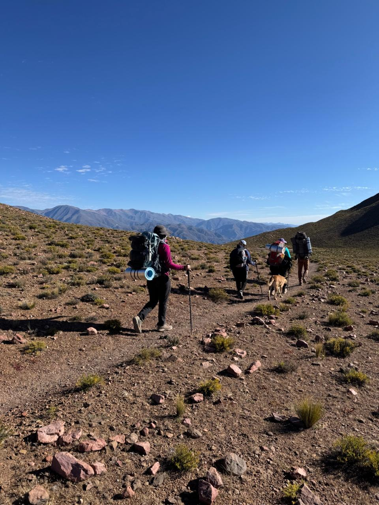
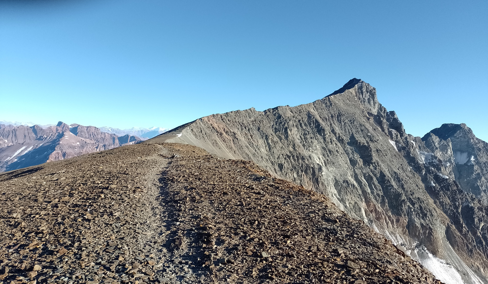
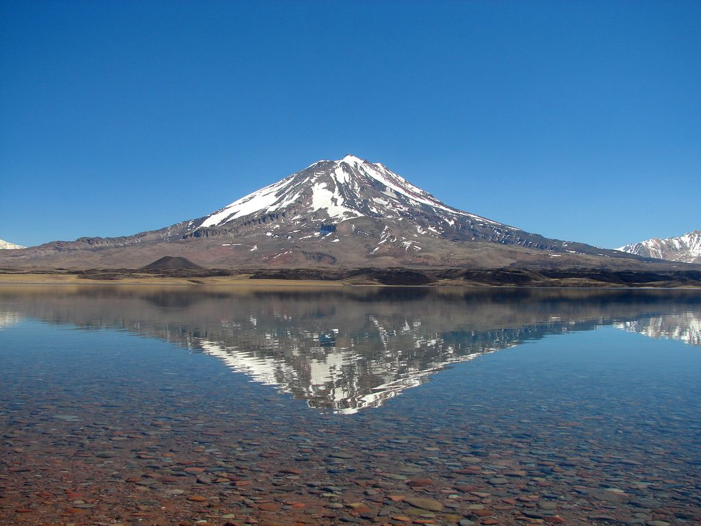
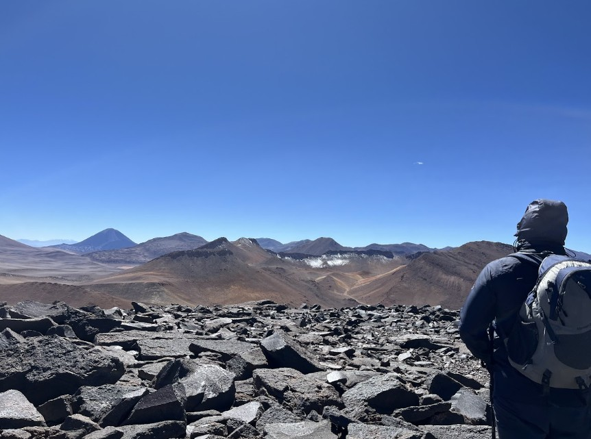
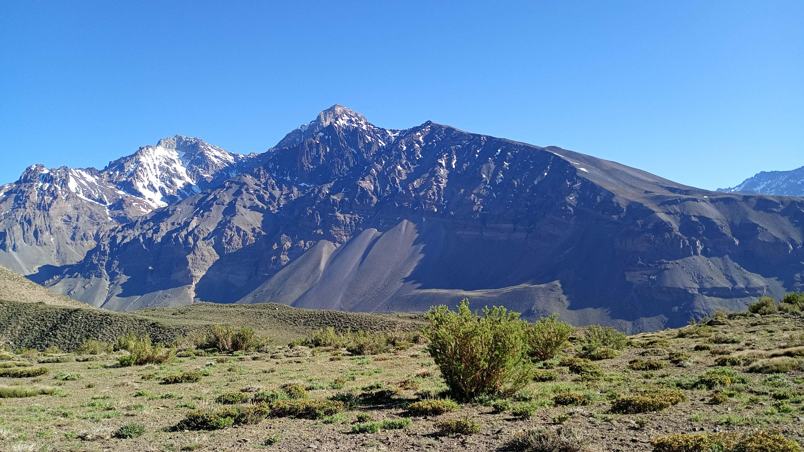
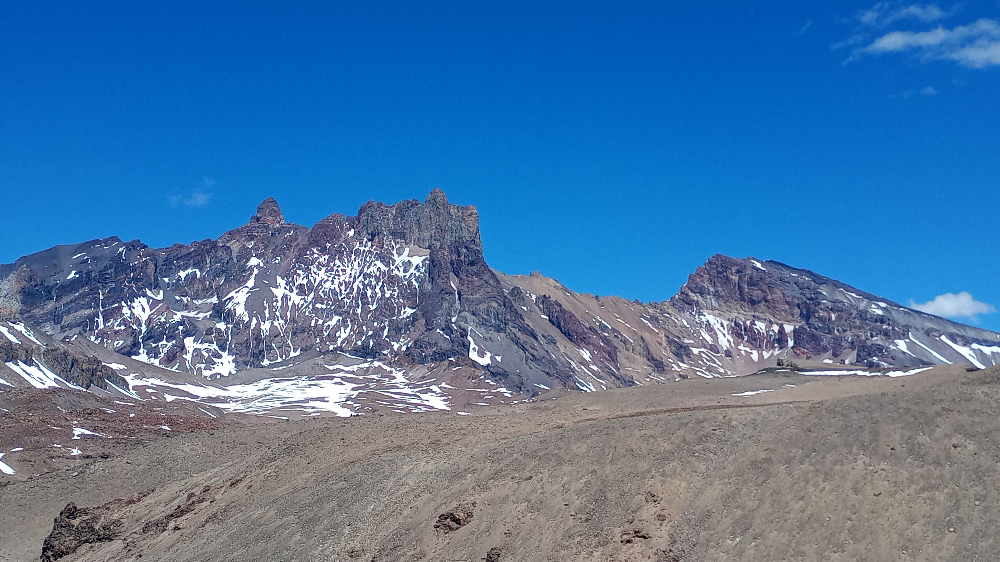

Expedición
+5000 msnm

Cerro Vallecitos

Volcán Maipo

Volcán Bertrand

Cerro El Sosneado

Risco Plateado

Volcán Tuzgle


Expedición





El Cerro Vallecitos es una de las montañas más clásicas y representativas de la Cordillera Frontal mendocina. Ubicado en la zona de Vallecitos, muy cerca de la ciudad de Mendoza, ofrece un entorno ideal para iniciarse en experiencias de alta montaña y ascensos de altura en los Andes centrales.
Su recorrido atraviesa vegas, quebradas y laderas de montaña con amplias vistas hacia los principales cordones cordilleranos de la región. Desde la cumbre, a más de 5400 msnm, se obtienen panorámicas privilegiadas del Cordón del Plata y de gran parte de la cordillera mendocina.
Gracias a su accesibilidad y a la belleza del entorno, el Cerro Vallecitos es una de las ascensiones más elegidas para aclimatación y formación en montañismo, combinando aventura, altura y paisajes típicos de la alta cordillera argentina.
Noviembre a Abril.
El Volcán Maipo es uno de los volcanes más elegantes y emblemáticos de la cordillera de los Andes, ubicado sobre la frontera entre Argentina y Chile. Con una altitud de 5350 msnm, se alza junto a la espectacular Reserva Natural Laguna del Diamante, formando uno de los paisajes más impresionantes de alta montaña en Mendoza.
La expedición combina trekking de altura, campamentos en entornos volcánicos y una experiencia de inmersión total en la naturaleza andina, rodeados de glaciares, lagunas y extensos escenarios de montaña.
Diciembre a Marzo.
El Cerro El Sosneado, con sus 5179 msnm, es una de las montañas más emblemáticas del sur de Mendoza y una de las cumbres más destacadas de la cordillera frontal argentina. Es considerado el "cincomil" más austral de los Andes y del hemisferio sur, por lo que se podría decir que es el más austral del mundo. Ubicado en la región del Valle del Atuel y cercano al histórico hotel termal de El Sosneado, ofrece una experiencia de expedición auténtica, atravesando amplios valles de altura, vegas andinas y paisajes volcánicos de enorme belleza.
Su ascenso combina aventura, aislamiento y grandes panorámicas de la cordillera mendocina, convirtiéndose en un objetivo ideal para quienes buscan una experiencia de montaña exigente en un entorno remoto y poco frecuentado.
Septiembre a Noviembre.
El Cerro Risco Plateado es una imponente montaña de la cordillera frontal mendocina, ubicada en la región de El Sosneado, al sur de la provincia de Mendoza. Tradicionalmente se le atribuyen alrededor de 4850 msnm, aunque existen mediciones y registros que sugieren que podría superar los 5000 msnm. De confirmarse esta hipótesis, se convertiría en el "cincomil" más austral del planeta.
La montaña se caracteriza por sus amplios paisajes de altura, filos panorámicos y un entorno remoto y poco frecuentado, lo que le otorga un marcado carácter de exploración. Desde su cumbre se obtienen privilegiadas vistas de los volcanes y cordones montañosos del sur mendocino y de la región de El Sosneado.
Noviembre a Abril.
El Volcán Bertrand es uno de los volcanes más destacados del Valle de los Seismiles, en la cordillera de Catamarca, alcanzando una altitud cercana a los 5300 msnm. Se caracteriza por su enorme cráter volcánico de más de 4 kilómetros de circunferencia y por ofrecer vistas privilegiadas hacia gigantes andinos como el Volcán Incahuasi, el San Francisco y el Pissis.
Su ascenso es ideal como experiencia de aclimatación de alta montaña, combinando terrenos volcánicos, paisajes desérticos de altura y una de las panorámicas más impactantes de la puna argentina.
Noviembre a Abril.
El Volcán Tuzgle es una de las montañas más imponentes y accesibles de la Puna argentina. Elevándose sobre extensos paisajes de altura, salares, lagunas y campos volcánicos, este cincomil domina el horizonte del altiplano jujeño y ofrece una experiencia única entre cultura andina, termas y escenarios de enorme belleza natural.
Considerado uno de los mejores volcanes para iniciarse en ascensos de más de 5000 metros, el Tuzgle combina trekking de altura, aclimatación progresiva y exploración de algunos de los rincones más impactantes del noroeste argentino.
Abril a Octubre.
El Nevado del Chañí, con sus 5896 msnm, es la montaña más alta de Jujuy y una de las cumbres más significativas del noroeste argentino. Considerado un cerro sagrado por las culturas andinas, el Chañí conserva importantes vestigios arqueológicos incas y fue escenario del hallazgo de algunas de las primeras momias de altura descubiertas en Sudamérica.
Ubicado entre la aridez de la Puna y la transición hacia las yungas, ofrece paisajes únicos donde conviven salares, montañas multicolores y extensos escenarios de altura. Esta expedición combina trekking de alta montaña, aclimatación progresiva y un fuerte componente cultural e histórico en uno de los rincones más impactantes del NOA.
Abril a Octubre.